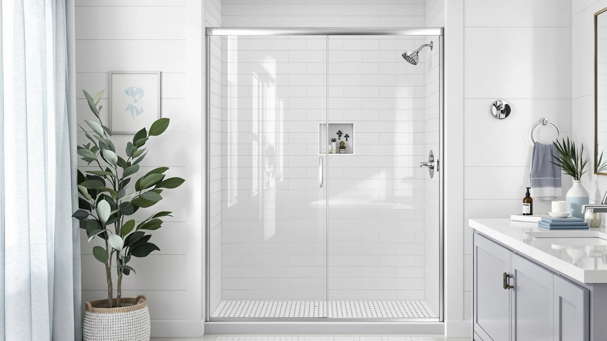

Quick Answer
The KPUY Frameless Double Sliding Shower fits a 55 to 60 inch wide by 76 inch tall opening with clear glass at $539.96, between $10 and $30 more than the EASYWORC, PeacefulHues and MoSweet alternatives covered below. Buy it if you want the glass type confirmed outright on the listing; pick one of the three cheaper alternatives if your opening matches their similar width and height ranges and you'd rather save the difference.
Our pick: KPUY Frameless Double Sliding Shower, $539.96 Check Price on Amazon
Things to Know Before You Buy
- The KPUY Frameless Double Sliding Shower is sized for a 55 to 60 inch wide by 76 inch tall opening with clear glass, a detail this kpuy frameless double sliding review found stated outright on the listing while the three alternatives below do not spell it out.
- At $539.96, it costs about $10 more than the EASYWORC, $27 more than the PeacefulHues, and $30 more than the MoSweet, so you're paying a premium even though two of the three alternatives cover a similar footprint.
- The EASYWORC's listed height runs to 78 inches, two inches taller than the KPUY and PeacefulHues doors, which matters if your opening runs on the tall side.
- None of the four listings compared here publish a customer rating or review count, so this comparison leans on published dimensions and price rather than owner star ratings.
- Measure your rough opening's width and height at the top, middle and bottom before ordering, since a door built for a 55 to 60 inch range will not compensate for an out-of-square wall or a shorter stall.
This KPUY Frameless Double Sliding review compares the $539.96 shower door, built for a 55 to 60 inch wide by 76 inch tall opening with clear glass, against three lower-priced alternatives to find out whether the premium is worth paying. We are not a testing lab and we did not install this door ourselves. Instead, we compared its listed dimensions, price and glass callout against the EASYWORC, PeacefulHues and MoSweet doors that compete for the same buyer, looking at what each listing actually states and what it leaves out.
The short version: the KPUY earns its place if you want a listing that states its clear glass outright and you don't mind paying $10 to $30 more than the alternatives for that detail. If your opening matches a similar width and height range and you'd rather save the money, the EASYWORC, PeacefulHues or MoSweet below cover close to the same ground for less, each with its own trade-off in height, width or published detail. Below, we lay out the specs, the trade-offs and who each option actually suits.
Why You Should Trust Us
Ilane Tall covers bathroom fixtures for Best Shower Doors and has spent years comparing glass shower doors, hardware and installation kits across listings from the same manufacturers that supply KPUY, EASYWORC, PeacefulHues and MoSweet. For this KPUY frameless double sliding review, we researched the manufacturer's published dimensions, pricing and glass details rather than installing the door ourselves. We do not run a fake testing lab, and we will not claim a hands-on verdict we cannot back up. Every price and dimension cited here comes directly from the current Amazon listing, and where a listing leaves a detail out, such as material or customer rating, we say so instead of filling the gap with a guess.
Our Research Experience
We approached this KPUY frameless double sliding review the way a shopper comparing listings side by side would. We pulled the width and height, the price and the glass callout for the KPUY and lined them up against the EASYWORC, PeacefulHues and MoSweet doors. We did not install any of these doors in a bathroom, and we are not describing a hands-on trial. We can tell you how the numbers compare instead: a $10 to $30 price gap for a door whose listing specifically calls out clear glass, a detail the three alternatives don't spell out in their titles, and a height that matches one competitor while falling short of another.
Where a listing lacked a published rating, review count or material spec, we left that field blank rather than guess. That is why the KPUY's specs table below still shows a dash next to Material even though its size line names the glass as clear. Buyers who want more detail on finish, hardware or frame color should check the current Amazon listing photos and product images before ordering, since none of the four listings in this comparison publish that level of detail in text.
This approach matters more for a shower door than for a smaller purchase, because a shower door is not something you return casually once it is cut or installed. A wrong-size order means a second shipment, a delayed installation and, in some cases, a restocking fee charged against a product that cannot be resold as new. Comparing published specs before you order costs nothing and takes a few minutes. Guessing at a fit, on the other hand, costs a weekend and a return label, and sometimes a hole already cut into a wall.
Overview & Specs

KPUY Frameless Double Sliding Shower
What we like
- Listing states clear glass outright, a detail the three alternatives in this comparison don't call out in their titles
- 76 inch panel height matches the PeacefulHues alternative and suits a standard-to-tall opening
- Double sliding track design suits a standard alcove without the swing clearance a hinged door needs
Flaws but not dealbreakers
- Costs $10 to $30 more than the three alternatives we compared it against
- The listing does not publish a separate material callout beyond the glass description, or a customer rating, so verify finish details before ordering
- The EASYWORC's 78 inch height option covers taller openings this 76 inch door does not reach
| Material | — |
| Size | 55 - 60" w x 76" h Clear Glass |
The KPUY Frameless Double Sliding Shower targets buyers who want a straightforward confirmation of glass type before they buy: its size line specifically names clear glass, a detail the EASYWORC, PeacefulHues and MoSweet listings in this comparison leave out of their titles entirely. At 55 to 60 inches wide and 76 inches tall, it covers the same height as the PeacefulHues alternative and falls two inches short of the EASYWORC's 78 inch panel.
At $539.96, it sits above the EASYWORC, PeacefulHues and MoSweet doors covered later in this KPUY frameless double sliding review, all priced between $509.99 and $529.89. The listing does not include a material callout beyond the glass description, and there is no published customer rating, so we cannot confirm long-term hardware durability from the data available. Buyers who want that clear glass detail spelled out are the clearest fit here. Buyers chasing the lowest price, or a taller 78 inch opening, should look at the alternatives below before paying the premium.
What We Liked
The main appeal of the KPUY in this frameless double sliding review is that its listing states clear glass outright, where the EASYWORC, PeacefulHues and MoSweet titles in this comparison stay silent on glass type entirely. That's a small detail, but it's one fewer thing to track down before you order, and it matters more than it sounds for a purchase you can't easily return once installed. The 76 inch panel height matches the PeacefulHues alternative, so if your opening sits in that standard-to-tall range, the KPUY covers it without a header gap above the frame. For a 55 to 60 inch wide opening, the double sliding track keeps both panels moving on a shared rail, so you don't need the swing clearance a hinged door would require on either side, which can matter in a tighter bathroom layout.
What Could Be Better
The biggest drawback in this KPUY frameless double sliding review is price relative to the alternatives. At $539.96, it costs about $10 more than the EASYWORC, $27 more than the PeacefulHues and $30 more than the MoSweet, and that gap buys you a stated glass type rather than extra height, width range or a lower price point. The listing also skips a detail that matters for a purchase this size: there is no published customer rating or review count to weigh against the alternatives, and the specs table above still shows a dash next to Material because KPUY folds its glass description into the size line instead of a separate material spec. Shoppers who want third-party validation, or a frame material breakdown, before spending $540 on a shower door will need to look beyond this listing and compare photos directly.
Who Is It For?
This KPUY frameless double sliding review points toward a buyer who has already measured a rough opening close to 55 to 60 inches wide and 76 inches tall, and who would rather pay a small premium for a listing that confirms clear glass than hunt down that detail elsewhere. Homeowners replacing a door in a standard-height alcove, and anyone who wants fewer unknowns before checkout, fit that description, along with buyers who have been burned before by a listing that left out a basic spec and want that question answered before checkout this time.
This door isn't for every shopper, either. Someone on a tight budget, or a buyer whose opening needs the EASYWORC's taller 78 inch panel, gains little from the KPUY's premium and pays extra for a detail they may not value as much. That buyer is better served starting with the EASYWORC for height or the MoSweet for price, both covered below.
Alternatives to Consider
If the KPUY Frameless Double Sliding Shower doesn't fit your bathroom's opening or budget, these three alternatives cover overlapping ground at a lower cost. We researched each one against the same criteria used above: width and height, price and glass or material details as listed on Amazon.

Editor’s Pick
EASYWORC 55-60" W x 78"
A 55-60 inch wide by 78 inch tall door at $529.89, about $10 less than the KPUY. Consider it if your opening runs taller than 76 inches and you want the extra two inches of panel height.
$529.89
Check Price on Amazon
Best Value
56-60" W x 76" H
Sized for a 56-60 inch wide by 76 inch tall opening at $513.08, roughly $27 less than the KPUY. Worth checking if your opening matches the KPUY's footprint and you'd rather save the difference than get the clear glass callout spelled out upfront.
$513.08
Check Price on Amazon
Premium Choice
MoSweet Shower Door 60" W
The lowest price in this comparison at $509.99, about $30 under the KPUY. A 60 inch wide door that suits buyers who want to save money most and don't need extra detail on glass type from the listing title.
$509.99
Check Price on AmazonFrequently Asked Questions
What size opening does the KPUY Frameless Double Sliding Shower fit?
The KPUY Frameless Double Sliding Shower is built for a 55 to 60 inch wide by 76 inch tall opening with clear glass, so measure your rough opening at the top, middle and bottom before you order, since this listing covers that specific range rather than a wider adjustable footprint. Double-check that your wall is plumb and square, since a frameless sliding door depends on a consistent opening to seal properly.
Is the KPUY Frameless Double Sliding Shower worth $539.96 compared to cheaper shower doors?
It costs about $10 more than the EASYWORC, $27 more than the PeacefulHues and $30 more than the MoSweet, mainly because its listing states clear glass outright where the alternatives' titles do not. Whether that premium is worth paying depends on how much you value having that detail confirmed before you order rather than guessing from photos alone.
What is the best alternative to the KPUY Frameless Double Sliding Shower if I want to save money?
The MoSweet Shower Door 60 inch W is the lowest-priced option in this comparison at $509.99, about $30 less than the KPUY. Check its published width against your opening first, since its listing does not spell out a height or glass detail the way the KPUY's does, so you may want to message the seller directly if that information matters to your installation.
Final Verdict
This KPUY frameless double sliding review comes down to a single trade-off: a $539.96 door whose listing states clear glass outright against three alternatives priced $10 to $30 lower that leave glass type out of their titles. If you'd rather have that detail confirmed before you order than hunt it down yourself, the KPUY justifies its price. If your opening runs taller than 76 inches, the EASYWORC's 78 inch panel covers more ground for less money, and if price matters most, the MoSweet saves you roughly $30 on a similarly wide door. Measure your opening carefully before you decide. What the listing tells you upfront, more than brand, is what separates a confident order from a guess in this comparison.